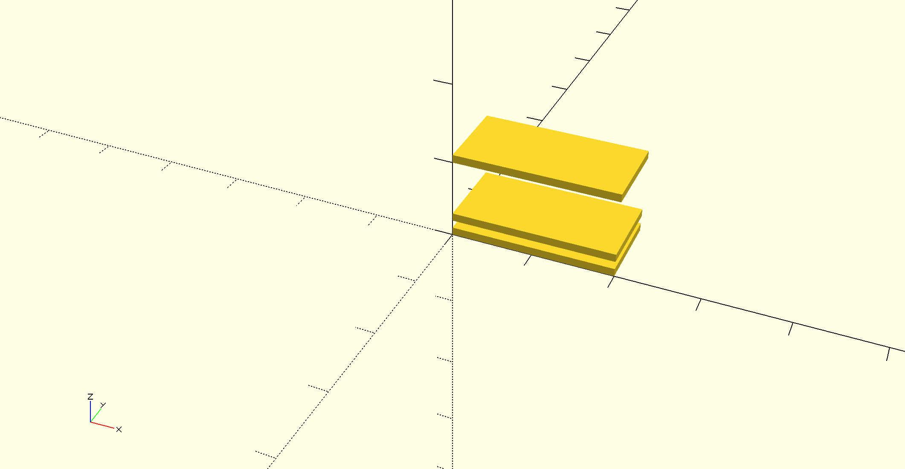
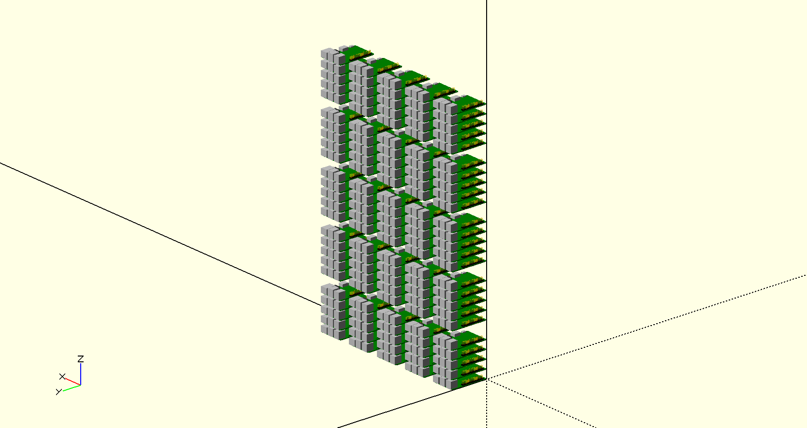
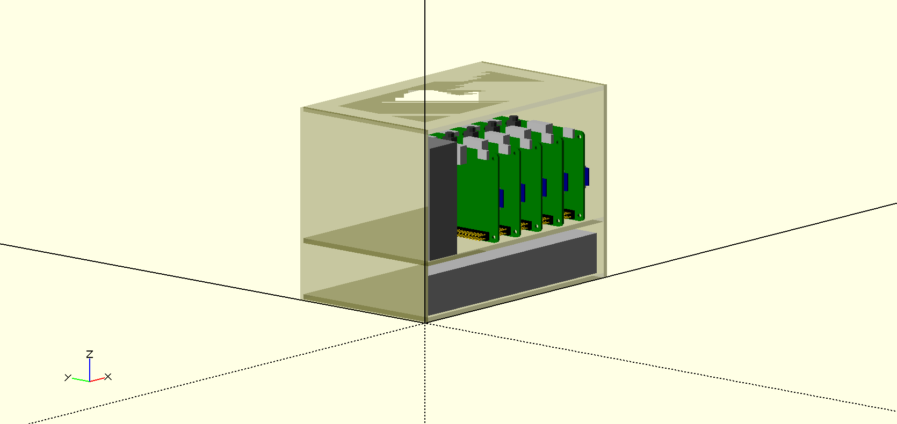
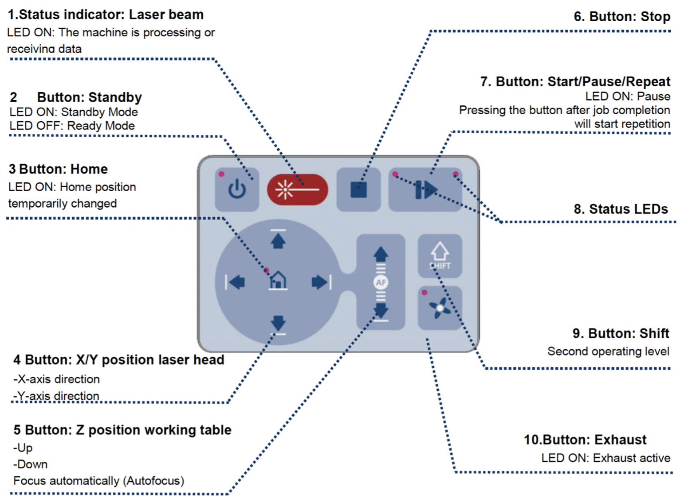

IU 100 Node Cluster Case
At Indiana University we have currently about 200 Raspberry Pi’s available for students that work with us as part of classes.
Our goal for the use of these PI’s is multitude.
First, we naturally like that all PI’s could be used together in a large cluster. Second we like that student teams up to 3 students can use a small cluster of between 6 - 5 Pi’s and use them to provision their own OS. Third, we like to crate a case and shelf structure that allows this modular utilization of the cluster while breaking it down easily, but also assembling or adding to the cluster easily.
This section will document our efforts to support this. The section is heavily under construction and currently two STEM students work on the case. They are joined by an independent study student offer the summer that looks at the software for this cluster.
To simplify management we will be using github for managing tasks, but we will start collecting these tasks here. At this time the STEM students are using still a google docs document till they migrate to this or their own github.
The outline of the section is as follows :construction:
First we provide an introduction to which tools to use for designing a case. This is followed by some examples that may lead to a case design. Next we provide an introduction on how to use the Laser cutter at IU. The last part of this section includes a list of links and some images of clusters designed by others.
Designing a Case with CAD
We believe the best program for us to design a case for the cluster is OpenSCAD. Links and tutorials to the software can be found here:
- http://www.openscad.org/
- http://www.openscad.org/cheatsheet/
- https://github.com/RigacciOrg/openscad-rpi-library
- https://www.youtube.com/watch?v=WQd5db9lsQk
Although OpenSCAD requires programming, it seems to be easier than creating the design with a GUI based CAD program. For this reason we will be using SCAD.
Other CAD software may be accessible to you also. However will not use for our case design. This includes the IU Maker Lab standard Software is Fusion 360 which is available from
As it does require a license it may not be accessible to many students. However you can use alternative that can be used for free. This includes FreeCAD
- FreeCAD Software https://www.freecadweb.org/
- FreeCAD Documentation https://www.freecadweb.org/wiki/Main_Page
This program allows you to design the layout of a 3D case via a sophisticated GUI just like Fusion 360.
IU cluster Case design
We have designed the following cases
TBD
Right now we just put some templates here to showcase we can actually generate the cases. More details will be added here soon.
Obviously you need to be able to have some walls and shelfs for the case. The following SCAD file shows how to use a simple cube to do that. This is just a start as the design does not include any connectors.

Next we show you how to use some predefined Raspberry PI boards in SCAD and use for loops to create rows and columns of 5 PIs each.

In the last design we showcase how the basis of a 5 node cluster could start. Naturally many other thing s need to be improved. Such as the connectors, and the proper width. However this SCAD will provide you with a good start to improve your SCAD programming abilities and come up with a final design.

Once you have designed the 5 node cluster, you will also need to design a shelf in which you can place them. Power plugs need to be added. so you can power the PI within the cluster.
Laser Cutter
With a laser cutter we can create very precise cases. First, you will need an overview of what a laser cutter is. There are many good resources about this on youtube. One such video is provided by a company that sells laser cutters:
Disclaimer: While pointing to this video we do not endorse the product. We do not own this particular brand.
After you have designed your case, you can create it on the laser cutter available at Indiana University. The laser cutter is located at
- TBD
and operated by ISE. You can get access to it by contacting the help desk with an email. You will need to get certified for operating the laser cutter to use it.
:o2: TODO: add contact email
The certification will teach you how to use the laser cutter properly. We will walk you through the steps that you can expect will be tought to you as part of the certification.
The first step includes turning on laser cutter.
An instructor will demonstrate how to turn the laser cutter on and carry out other preparation tasks on how to operate the laser cutter. Please get familiar but do not yet touch any buttons from the laser cutter.

Next the instructor will give you a walk through of the machine so you can replicate these steps next time.
-
Turn the laser cutter on: Use key to turn on the laser cutter.
-
Turn the exhaust fan on: The fan is a separately switched unit. Turn on the switch on the wall next to the laser cutter to turn on the exhaust in order to have proper ventilation during the cutting process.
-
Put the cutting material onto the laser cutterbed. The instructor puts the cutting material onto the laser cutter bed. In case the material is smaller than the honeycomb bed you will need to place is as follows TODO: TBD
-
The buttons for the laser cutter do the following
- The middle top one is on-hold button, one can press it to save the power of the laser cutter.
- The start/pause button can be used to pause a job in the middle. Once you start from a paused state the job resumes.
- The stop button will cancel the job. You will need to restart the job from the beginning if this button is pressed to stop a job.
- The four buttons on the bottom left controls the x/y horizontal shift of the laser head. The other two controls the z-axis, or vertical movement of the cutting bed.
Note that while the stop button stops the entire process, the pause button will halt the process so you can continue.
-
To properly cut the material, you will need to focusing the laser head. Move the laser head above the cutting material, then will place the focusing tool on the laser head. Then carefully raise the cutting bed. When the focusing tool touches the material on the bed it will fall off indicating the laser is focused. You must be careful to not raise the bed too fast in order not to damage the laser head.
-
Now we need to send the file to the job control software and initiate cutting
-
Send the file to the Job Control by opening the saved file in Adobe Illustrator. TODO: how do we get the SCAD file into it, which format do we need. You click print and set the printer to “Trotec Laser Cutter”.
-
Set laser cutting parameter will be set to width and height of the cutting area in the size column. By clicking the “Preferences” tab, one can adjust the settings of different colors (traditionally red lines are for cutting and black lines and areas are for engraving)
-
Move the file to Job Control work surface by turning on the Job Control software and discover the job is in the queue on the right of screen.
-
Next drag the file to be cut on to the Job Control work surface and set it up in the upper right corner.
-
Select the Play arrow in JobControl
-
An exhaust warning will appear. Select OK. The job will start.
-
Questions to be integrated:
- What is the importance of setting cutting parameters?
- What will you check before pressing the start button to ensure safety?
Cases and Parts Designed by the Community
A 3D model of the Raspberry PI is available at
- STL https://www.thingiverse.com/thing:1701186
- https://grabcad.com/library/raspberry-pi-3-reference-design-model-b-rpi-raspberrypi-raspberry-pi-2
These models are important as they allow us to use them in the CAD drawings to identify proper placement.
Certainly we need to identify how to connect the walls of the case. The following links provide some ideas for such connections.
- T-nut design: A convenient connector using screws ant nuts to connect walls in 90 degree angles [link]
- How To: Make Cheap LaserCut Custom Boxes for Your DIY Electronics, includes t-bolt design [link]
- A tutorial on how to make snug joints. It has some good tips of placing circles as stress relieve points [link]
- Screw only: A design to just use screws to connect the walls. The disadvantage is that the receiving ends need to be cut by a hand tool. [link]
- A sample design that just uses groves, so this would have to be glued. [link]
- Another design with groves that needs to be glued [link]
- A guide to handle acrylic [link]
- Some special brackets which could be 3 D printed. These brackets have the advantage that only slots and holes need to be placed [link].
- Although CNC, here are some connector ideas that could be replicated or modified for acrylic [link]
- Some tips for working with acrylic in general [link]
- [link]
- A design based on metal beams to create the outside. This may be more expensive, but stable [link]
- Some also used lego technics [link]
We also previously indicated that the width of the mounting holes on a Pi is about 7 spaces wide, making it possible to create a lego technic case.